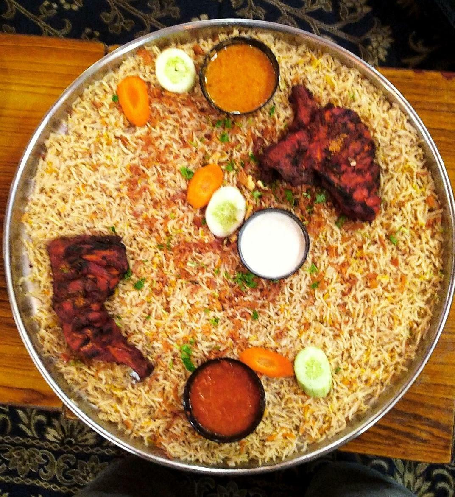

I am a very enthusiastic person, and this trait has been a part of me since my childhood. I did my Bachelors in Information Technology. I am doing my masters in Northwest Missouri State University. I would like to explore the places, watching movies & Surfing through internet.
Chicken mandi is prepared with a blend of aromatic spices, including cardamom, cloves, cinnamon, and black lime. These spices give the dish a complex and enticing flavor profile that appeals to many. The chicken used in mandi is often marinated in a mixture of yogurt and spices before being slow-cooked. Mandi is typically served with fragrant basmati rice that's been cooked with the same flavorful spices and juices from the chicken.
